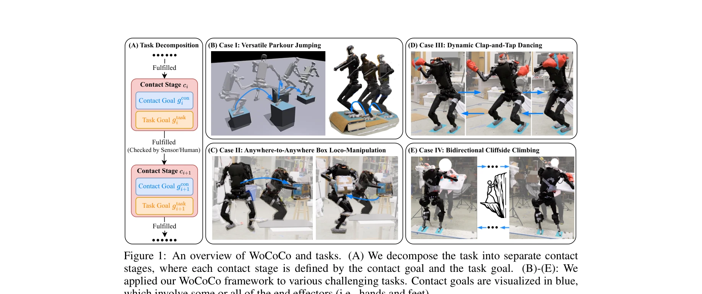
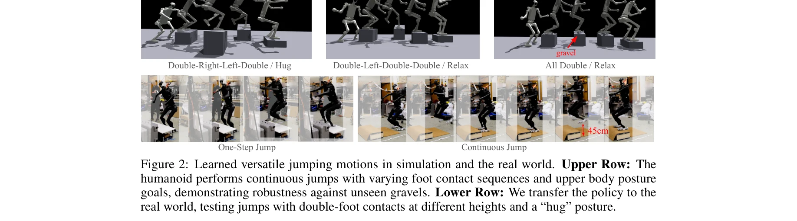

저자: Chong Zhang, Wenli Xiao, Tairan He, Guanya Shi | 날짜: 2024-06-10 | URL: https://arxiv.org/abs/2406.06005

Figure 1: An overview of WoCoCo and tasks. (A) We decompose the task into separate contact
WoCoCo는 순차적 접촉(sequential contacts)을 포함한 전신 휴머노이드 제어를 학습하기 위한 통합 RL 프레임워크로, 작업을 접촉 단계별로 분해하여 task-agnostic 보상 설계와 sim-to-real 파이프라인을 제시한다.
Figure 1: An overview of WoCoCo and tasks. (A) We decompose the task into separate contact

Figure 2: Learned versatile jumping motions in simulation and the real world. Upper Row: The
총평: WoCoCo는 순차적 접촉을 포함한 휴머노이드 제어 문제에 대해 개념적으로 우아하고 실용적인 RL 프레임워크를 제시하며, 4가지 도전적 작업의 현실 검증을 통해 높은 응용 가치를 입증한다. 다만 접촉 계획의 자동 생성 및 더 복잡한 작업 환경으로의 확장은 향후 연구 방향이다.